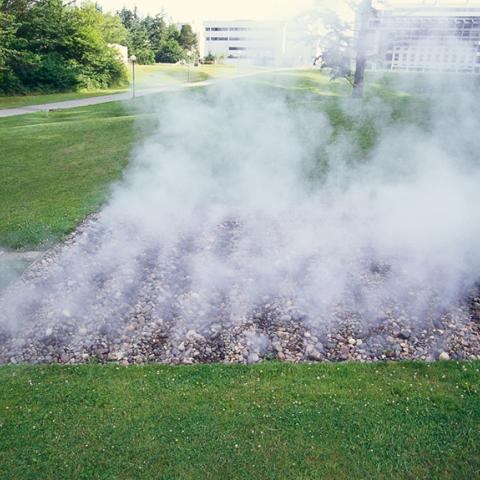

Sculptures Near the Wade King Rec Center
Rain Forest
- James FitzGerald, 1959, installed 1960.
- Bronze fountain. 14' h. x 12' w. x 24' l.
- Rain Forest was Western’s first public sculpture and
FitzGerald’s first bronze fountain. Evoking the rainforests
on the Olympic Peninsula, the vertical structure, with its
bark-like pattern, suggests a stand of trees above the
horizontal element of a fallen trunk. Within the latter are
screens with calligraphic patterns, which refer to the
region’s close connection to China and Japan.
Untitled
- Donald Judd, 1982.
- Corten steel. 7 1/3' h. x 7 1/3' w. x 14 2/3' d.
- Untitled represents important aspects of the Minimalist movement,
which Judd pioneered: clear and distinct form, use of industrial
material, outsourced fabrication in a sheet-metal workshop, and
elimination of all references and metaphoric meaning. What matters
is the real experience of the sculpture’s appearance in nature.
Manus
- Magdalena Abakanowicz, 1994.
- Bronze with beeswax. 15' h.
- As part of Abakanowicz’s “Hand-like Trees” series begun in the 1990s,
this sculpture “represents a metaphoric bridge between a form of nature
and a human form.” The artist chose to site the sculpture with Sehome
Hill Arboretum in the background to accentuate the link between the
woods and the human activity on campus.
Garapata
- John Keppelman, 1978.
- Painted aluminum plate. 10' h. x 7' w.
- Keppelman arrived at the simple shapes of this sculpture by cutting and
folding paper. Because these shapes suggest a sense of soaring motion,
he named it Garapata after a dramatic California setting, a river and
canyon which intersects with the Pacific Ocean which he knew in his youth.

Untitled (Steam Work for Bellingham)
- Robert Morris, 1971, installed 1974.
- Rock and steam. Rock 20' x 20' with variable height of steam.
- Known for his conceptual approach, performances and environmental art, Morris
combines these components in this ever-changing steam sculpture to create a
performance of natural elements. Chance and environmental factors such as
sunshine, wind, and fog affect the shape of the steam. The steam, which is set
on a timer, comes on at 8-8:30 a.m., 12-12:30 p.m., and 5:30-6 p.m.
Stone Enclosure: Rock Rings
- Nancy Holt, 1977-78.
- Brown mountain stone. 10'h. with outer ring 40' d. and inner ring 20' d.
- Holt’s rock enclosure is aligned with the North Star, also known as Polaris. The
four arches in the inner and outer rings are oriented from north to south. The
circular windows refer to points on the compass, providing horizontal sightline
out onto the landscape. Polaris was used for navigating by coastal seafarers.